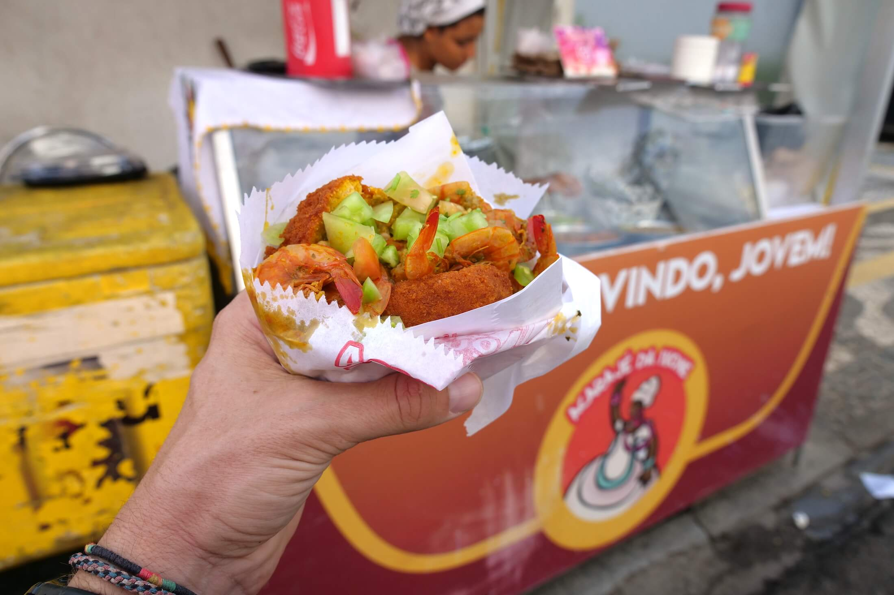
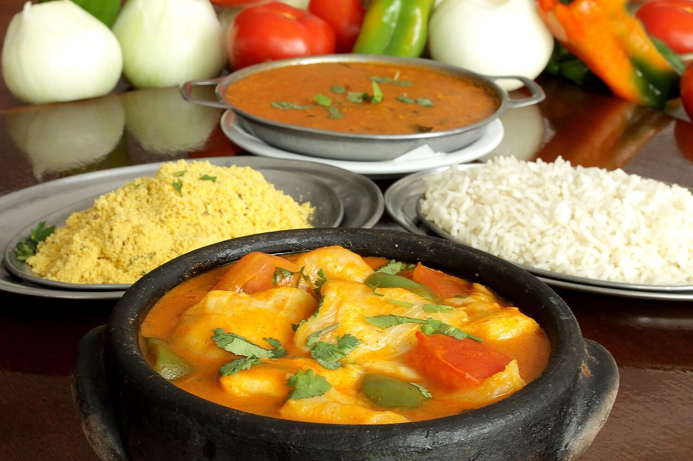

Gastronomie
Das Essen in dem Bundesstaat Bahia, basiert auf Garnelen und Meeresfrüchten im Allgemeinen. Der Afrikanische Einfluss ist sehr präsent in der Küche dieser Region, daher wird auch viel mit rotem Palmöl (Azeite de Dende) gekocht, was den Gerichten eine rötliche Farbe verleiht. Das Palmöl ist in den nächsten Gerichten auch enthalten.
Es gibt Acarajé eine Art von Streetfood der Region, das man in so gut wie jeder Straßenecke von Salvador finden kann. Es besteht aus Bohnen, Garnelen und rotem Palmöl. Gegessen wird es zu einigen Beilagen wie Erdnusssoße oder einer Paste bestehend aus Okraschoten.
Dann gibt es noch das Gericht namens Moqueca, was man als Garneleneintopf beschreiben kann. Es enthält Kokosmilch, Garnelen, rotes Palmöl und wird zu Reis und einer Erdnusspaste gegessen.
Zum Schluss gibt es noch ein typischen Nachtisch der Region, Mungunzá. Dies ist ähnlich wie Milchreis, nur werden anstatt Reis, weiße Maiskörner verwendet und anstatt Kuhmilch, Kokosmilch.

Acarajé

Moqueca

Mungunzá